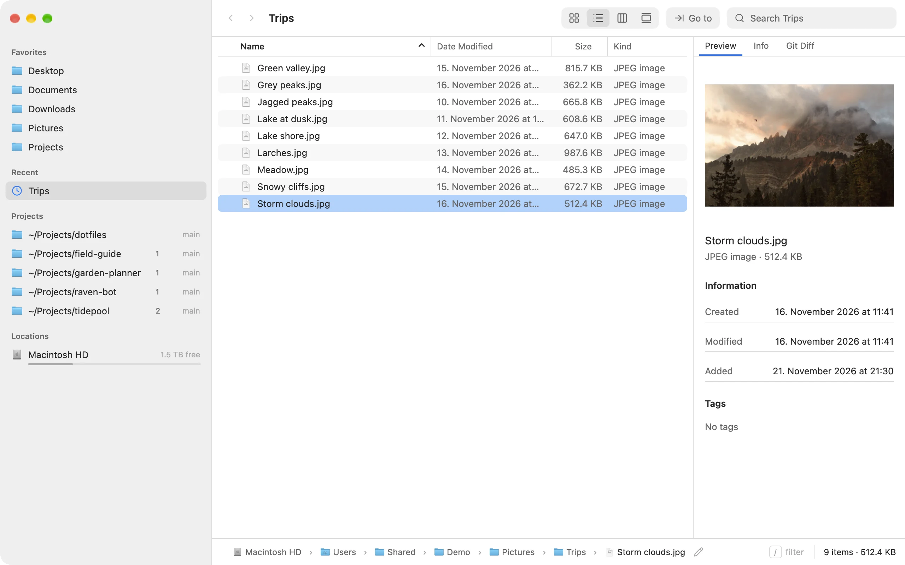
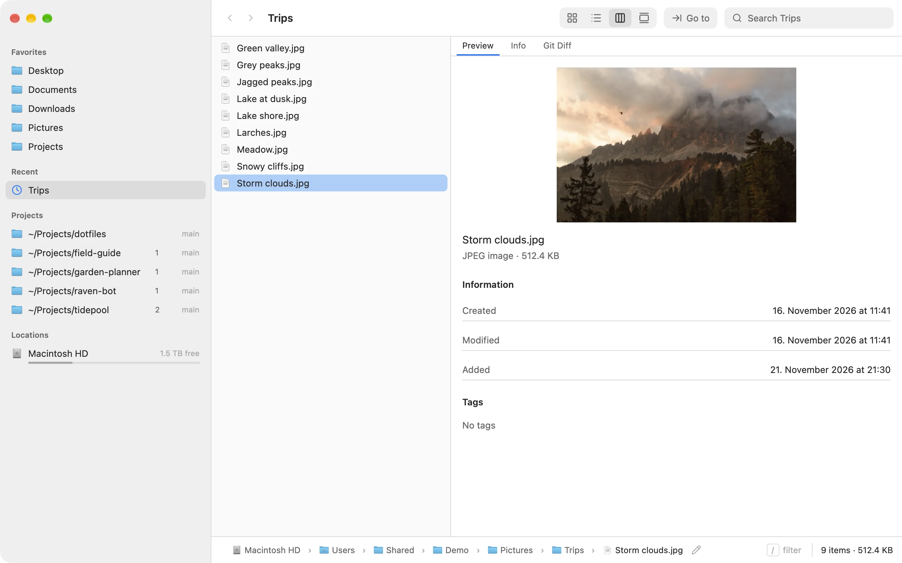
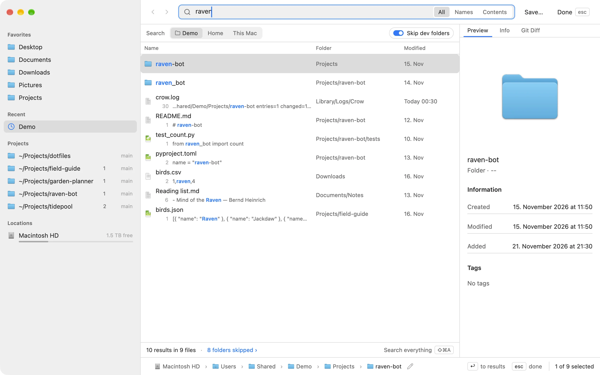
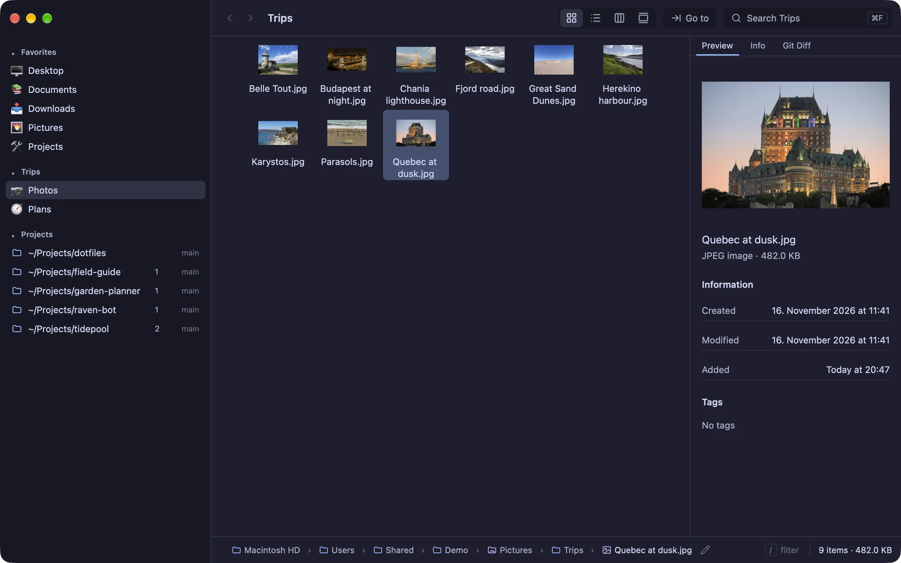
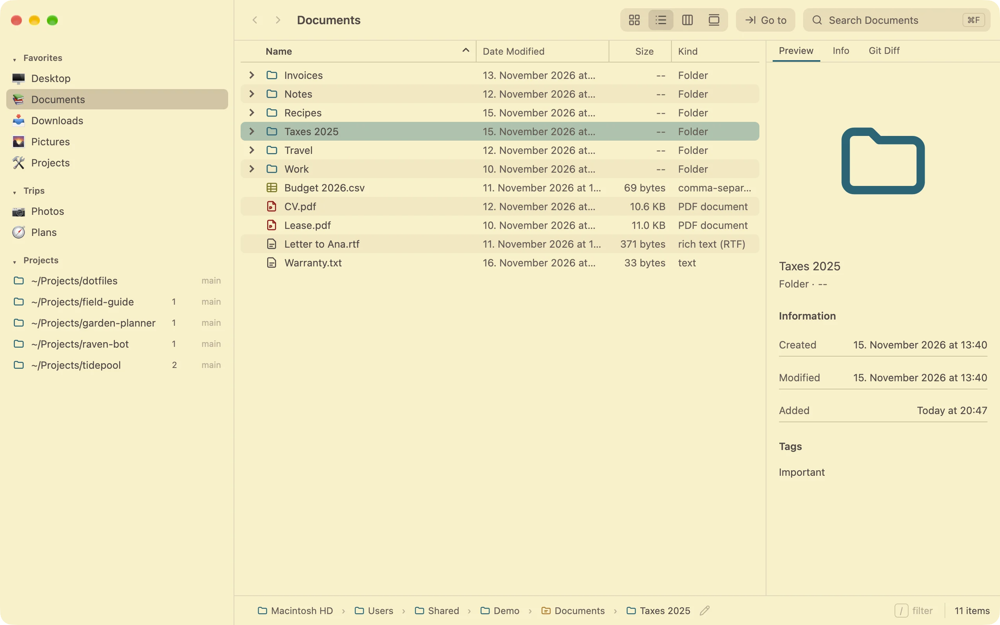
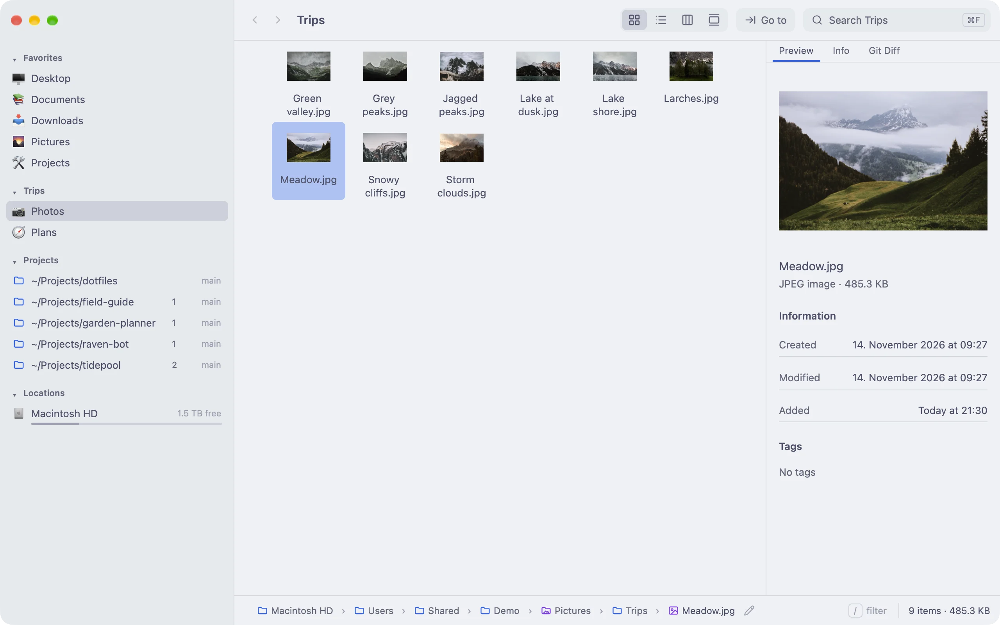
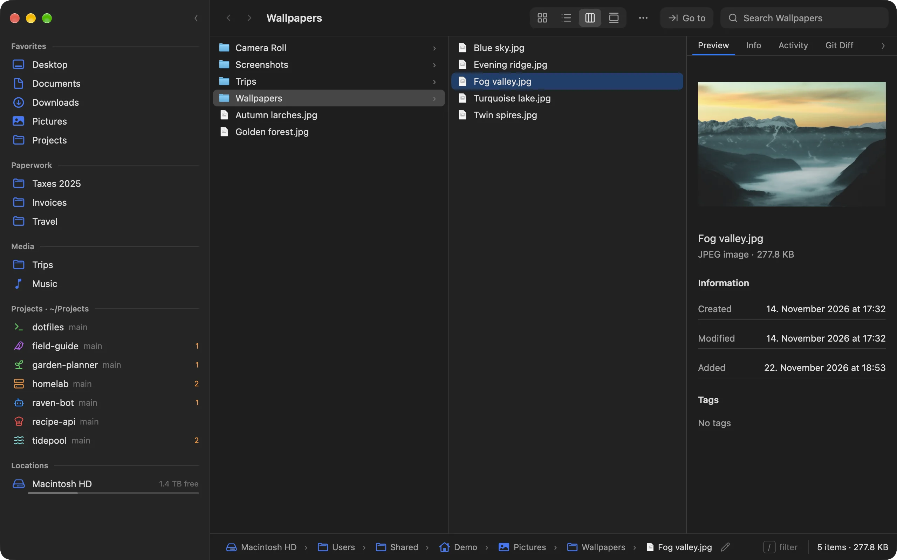

Everything you like about Finder. Nothing you’ve learned to put up with.
A file explorer for macOS, built in Rust on the GPU.
Download for Mac
brew install --cask paraversal/tap/crow

One folder, four ways.



Keyboard first. Mouse welcome.
⌘KGo anywhere

⌘FFind anything

- /Filter this folder
- ⌘ZUndo, even a trash
- ⌥⌘NNew file
- SpaceQuick Look
- ⌘JWhy this view?
- hjklVim layer, if you like
Fast, and it stays fast.
- 100k
- files in one folder, no stutter
- 10ms
- to the first rows on screen
- 120fps
- scrolling on a ProMotion display
Your repos, right in the listing.
- M ?changed and new files, badged
- main 2branch and changes per project
- Git Diffstaged and unstaged, beside the file
- PluginsGit is one; write your own in Rhai

Make it yours.




Any Base24 theme in ~/.config/themes shows up live, icon packs and sidebar emoji included.
Get Crow.
Download
The DMG from GitHub Releases. Crow isn’t notarized yet, so macOS asks once: how to open it.
Homebrew
Also puts the crow command on your PATH.
brew install --cask paraversal/tap/crow
From source
Rust stable and Xcode’s command line tools.
./scripts/fetch-gpui.sh ./scripts/bundle.sh --install